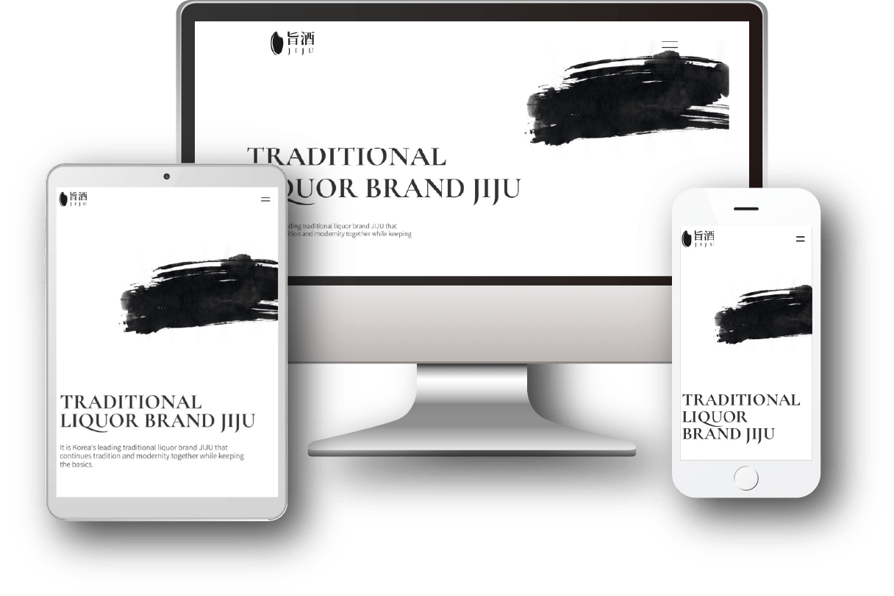

JIJU
# PC# TABLET# MOBILE기여도 :팀 프로젝트 참여율 25% (PRODUCT, STORE)
사용 툴 :PHOTOSHOP / ILLUSTRATOR / EDIT PLUS
사용 스킬 :HTML5 / CSS3 / JAVASCRIPT
VISIT SITE

DESIGN CONCEPT
STRATEGY
· 한국의 다양한 전통주를 판매하는 주류 사이트
· 무채색의 컬러와 붓으로 칠한 듯한 이미지를 통해 전통적인 느낌 강조
· 감각적인 디자인과 함께 사회공헌, 기업정보, 제품정보 등 다양한 정보를 전달
FONTS
CORMORANT-GARAMOND - BOLD
NOTO SANS KR
- REGULAR / MEDIUM / BOLD
COLOR
#FFFFFF#333333#000000
KEY WORD
# 전통적인# 깔끔한